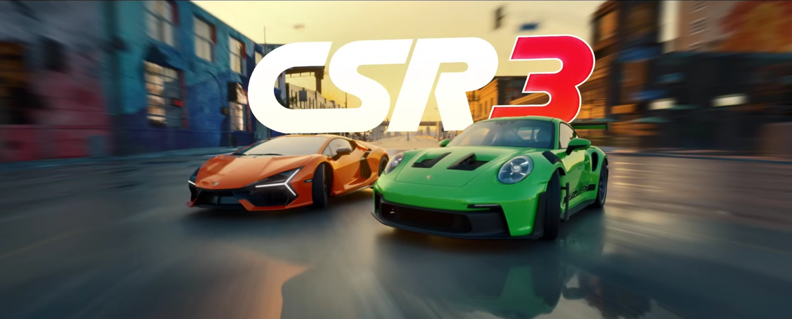

CSR3
Worked on the mobile title CSR3.
Production, peer support, tech tooling, best practices & pipelines. VFX, HLSL, UI animation & tweening.
Unity
C#
Animation
Tweening
Memory diagnostics
Financial risk management
UI Optimisation
HLSL
Agile/Scrum